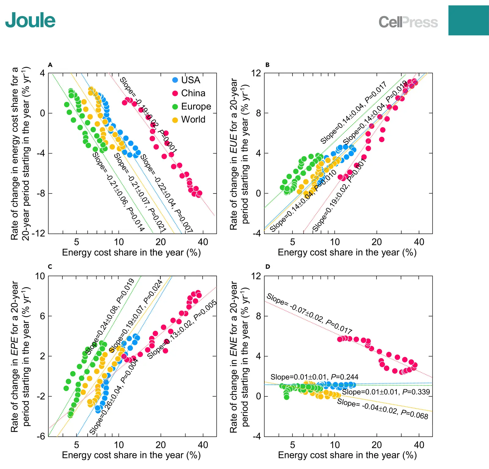

Induced energy-saving efficiency improvements amplify effectiveness of climate change mitigation
Key finding. A 1 per cent rise in energy's share of costs increases energy-use efficiency by about 1.2 per cent over the following 20 years — a larger effect than previous bottom-up estimates — and incorporating that relationship into an integrated assessment model shows carbon prices saving up to 30 per cent more energy by 2120.

What question did this research address?
Making energy more expensive does not only cause people to use less of it at fixed efficiency. It also causes them to invest in becoming more efficient, which changes how much energy a given price signal ultimately saves.
That mechanism had been studied with bottom-up models, but remained contested because the empirical data needed to calibrate it was lacking. This paper asked whether the relationship could be calibrated top-down from the historical record instead.
What did we find?
The calibration uses historical rates of various efficiency changes against energy's share of costs, via a modification of Solow's model of economic productivity. This is a top-down approach, avoiding the parameter-estimation problem that made earlier bottom-up work contested.
The estimated response is about 1.2 per cent improvement in energy-use efficiency for each 1 per cent rise in energy cost share, realised over roughly twenty years — a higher gain than bottom-up methods had suggested.
Incorporating that induced-efficiency relationship into an integrated assessment model means a carbon price saves up to 30 per cent more energy by 2120 than the same model without the mechanism.
A carbon tax therefore does two things at once. It shifts consumption away from carbon at current efficiency, and it induces the efficiency improvements that compound that shift over decades.
Why does it matter?
The result strengthens the case for carbon pricing on its own terms. If models omitting induced efficiency understate the energy saved by up to 30 per cent, then the standard appraisal of a carbon tax understates its effectiveness as a mitigation tool.
It also illustrates why the timescale of a policy evaluation matters. The induced effect accrues over twenty years, so an assessment window shorter than that will systematically miss most of it.
Citation
Rong Wang, Harry Saunders, Juan Moreno-Cruz, and Ken Caldeira (2019). Induced energy-saving efficiency improvements amplify effectiveness of climate change mitigation. Joule 3, 2103-2119.